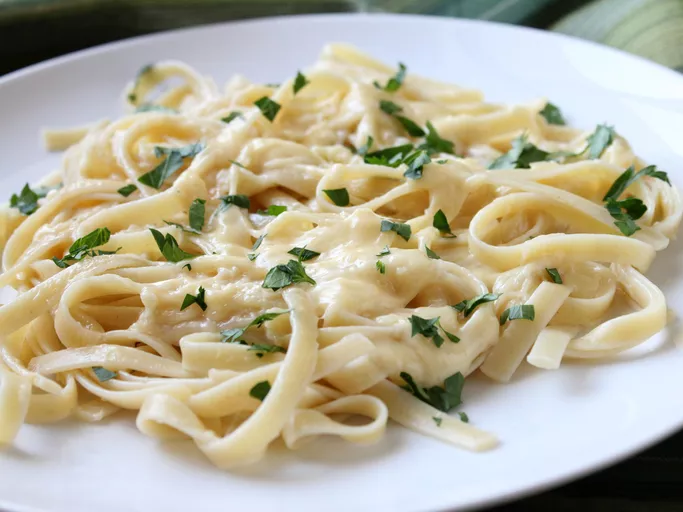

<!DOCTYPE html>

<html lang="en">
<head>
    <meta charset="UTF-8">
    <link rel="stylesheet" href="alstyles.css">
    <title>Alfredo Sauce</title>
</head>
</html>
<body>
    <h1>Momma's Homemade Alfredo Sauce Recipe</h1>
    
    <p><h4>This is my own personal alfredo recipe. For this sauce, I have never used
        an actual recipe. Everything is approximate (and from the heart), so please adjust to your taste.
    </h4></p>
    <h5 id="main"><ul>Ingredients!</ul></h5>
        <li id="list">1x 32oz. of Heavy Whipping Cream</li>
        <li id="list">1 block of parmesan cheese. (I recommend freshly shredded parmesan
            for better flavor.)</li>
        <li id="list">1 stick of salted butter</li>
        <li id="list">Salt and Pepper to taste (If you don't want to see the pepper, use white pepper)</li>
        <li id="list">Minced Garlic (Measure until your italian ancestors say stop)</li>
        <li id="list">Italian Seasoning to taste</li>

    <h5 class="main"><ol>Directions!</ol></h5>
        <li class="list">Melt 1x stick of butter on low heat & add minced garlic -- Let cook for 3 minutes</li>
        <li class="list">Slowly add in Heavy Whipping Cream (DO NOT over mix, could risk broken sauce)</li>
        <li class="list">Once butter & cream are incorporated, slowly add in shredded parmesan, keep on low heat</li>
        <li class="list">Keep adding cheese until melted and sauce is a creamy consistancy (or whatever consistancy you like)</li>
        <p>*NOTE* If butter and cream keep separating, that's okay. They will mix as more cheese is added.</p>
    <button><p><a href="../index.html">Back to Home</a></p></button>
</body>